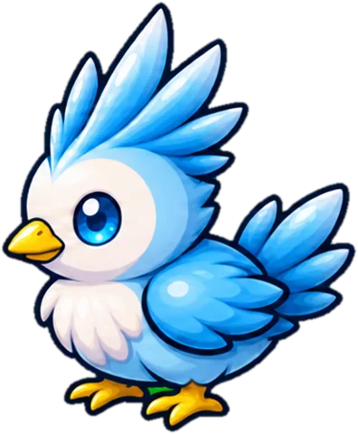

 WindIce
WindIceTap a stage to read its story.
Zephlet is a round, fluffy ice-blue bird that bounces when it lands rather than walking like a sensible creature. Its tiny wings are oversized for its body and flap furiously to keep it hovering a finger's width off the ground. Two bright eyes peer from a puffy face, and the feathers around its head puff into a crest when wind blows from the sea. On the Frozen Peaks it follows the coastal thermals for hours, practicing each new sound it has learned in tiny half-heard chirps.
Field note: Zephlet lands on the same pebble every morning at the same time - researchers at Frozen Peaks have named the pebble after it.
Coral Bay. Zephlet and its family are found in the Coral Bay. See everyone who lives there.
Share a Bond Food that matches its types to become friends. Zephlet loves:
A Bond Food is not a trick. It joins your spirit with the Kimuro's spirit, and only when it chooses you.
Print the Kimuro adventure packs: mazes, cards, a board game and Bond Mark medals.
See the printable packs